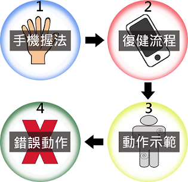
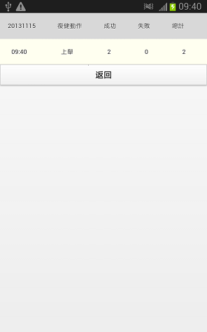

MedicalSuit
新手訓練 - Train
開始 - Start
紀錄 - Record
電子書 - Ebook
中風量表 - StrokeScale
離開 - Exit
MedicalSuit

開始
MedicalSuit
手機握法
復健流程
動作示範
錯誤動作
新手訓練
1.訓練流程
2.訓練開始
登入
1.復健動作選擇
2.復健動作示範
3.次數、角度選擇
4.復健開始
5.完成畫面
6.紀錄查看

上舉示範影片
下放示範影片
耳朵示範影片
上舉錯誤示範影片
下放錯誤示範影片
摸耳朵錯誤示範影片
注意事項
上舉、下放 : 身體不可以傾斜
摸耳朵 : 頭不可以傾斜 且 肩膀不可以上抬
返回
上傳
MedicalSuit
上舉 - Raise
下放 - Lower
摸耳朵 - Ear
MedicalSuit
手機 - smartphone
MedicalSuit
項目選擇
哪隻手:
左手
右手
選擇難度:
至肩部
至耳邊
做幾次:
5
10
15
20
25
30
35
40
45
50
做幾度:
90
120
180
確定
MedicalSuit
已成功 0 次
，失敗 0 次
Waiting...
點我返回